Chapter 13 The gglot2 Library
Being able to create visualizations (graphical representations) of data is a key step in being able to communicate information and findings to others. In this chapter you will learn to use the ggplot2 library to declaratively make beautiful plots or charts of your data. Although R does provide built-in plotting functions, the ggplot2 library implements the Grammar of Graphics (similar to how dplyr implements a Grammar of Data Manipulation; indeed, both packages were developed by the same person). This makes the library particularly effective for describing how visualizations should represent data, and has turned it into the preeminent plotting library in R. Learning this library will allow you to easily make nearly any kind of (static) data visualization, customized to your exact specifications.
Examples in this chapter adapted from R for Data Science by Garrett Grolemund and Hadley Wickham.
13.1 A Grammar of Graphics
Just as the grammar of language helps us construct meaningful sentences out of words, the Grammar of Graphics helps us to construct graphical figures out of different visual elements. This grammar gives us a way to talk about parts of a plot: all the circles, lines, arrows, and words that are combined into a diagram for visualizing data. Originally developed by Leland Wilkinson, the Grammar of Graphics was adapted by Hadley Wickham to describe the components of a plot, including
- the data being plotted
- the geometric objects (circles, lines, etc.) that appear on the plot
- the aesthetics (appearance) of the geometric objects, and the mappings from variables in the data to those aesthetics
- a statistical transformation used to calculate the data values used in the plot
- a position adjustment for locating each geometric object on the plot
- a scale (e.g., range of values) for each aesthetic mapping used
- a coordinate system used to organize the geometric objects
- the facets or groups of data shown in different plots
Wickham further organizes these components into layers, where each layer has a single geometric object, statistical transformation, and position adjustment. Following this grammar, you can think of each plot as a set of layers of images, where each image’s appearance is based on some aspect of the data set.
All together, this grammar enables you to discuss what plots look like using a standard set of vocabulary. And like with dplyr and the Grammar of Data Manipulation, ggplot2 uses this grammar directly to declare plots, allowing you to more easily create specific visual images.
13.2 Basic Plotting with ggplot2
The ggplot2 library provides a set of declarative functions that mirror the above grammar, enabling you to efficaciously specify what you want a plot to look like (e.g., what data, geometric objects, aesthetics, scales, etc. you want it to have).
ggplot2 is yet another external package (like dplyr and httr and jsonlite), so you will need to install and load it in order to use it:
install.packages("ggplot2") # once per machine
library("ggplot2")This will make all of the plotting functions you’ll need available.
- Note that the library also comes with a number of built-in data sets. This chapter will use the provided
mpgdata set as an example, which is a data frame containing information about fuel economy for different cars.
In order to create a plot, you call the ggplot() function, specifying the data that you wish to plot. You then add new layers that are geometric objects which will show up on the plot:
# plot the `mpg` data set, with highway mileage on the x axis and
# engine displacement (power) on the y axis:
ggplot(data = mpg) +
geom_point(mapping = aes(x = displ, y = hwy))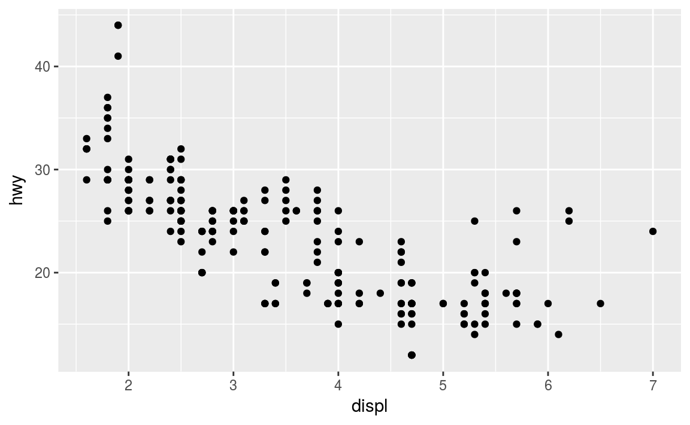
To walk through the above code:
The
ggplot()function is passed the data frame to plot as thedataargument.You specify a geometric object (
geom) by calling one of the manygeomfunctions, which are all namedgeom_followed by the name of the kind of geometry you wish to create. For example,geom_point()will create a layer with “point” (dot) elements as the geometry. There are a large number of these functions; see below for more details.For each
geomyou must specify the aesthetic mappings, which is how data from the data frame will be mapped to the visual aspects of the geometry. These mappings are defined using theaes()function. Theaes()function takes a set of arguments (like a list), where the argument name is the visual property to map to, and the argument value is the data property to map from.Finally, you add
geomlayers to the plot by using the addition (+) operator.
Thus, basic simple plots can be created simply by specifying a data set, a geom, and a set of aesthetic mappings.
- Note that
ggplot2library does include aqplot()function for creating “quick plots”, which acts as a convenient shortcut for making simple, “default”-like plots. While this is a nice starting place, the strength ofggplot2is in it’s customizability, so read on!
13.2.1 Aesthetic Mappings
The aesthetic mappings take properties of the data and use them to influence visual channels, such as position, color, size, or shape. These are the representations that you want to drive with your data properties, rather than set for all markers. Each visual channel can therefore encode an aspect of the data and be used to express underlying patterns.
The data-driven aesthetics for a plot are specified in the aes() function call for that geom layer. For example, you can add a mapping from the class of the cars to the color channel:
# color the data by car type
ggplot(data = mpg) +
geom_point(mapping = aes(x = displ, y = hwy, color = class))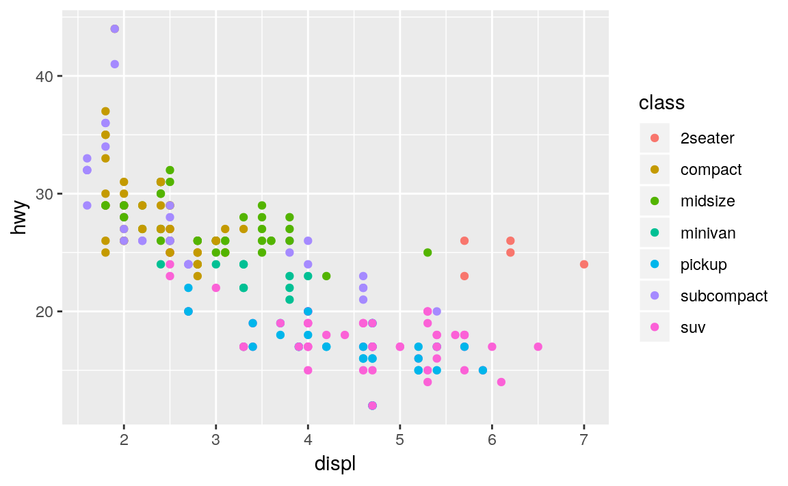
(ggplot2 will even create a legend for you!)
Note that using the aes() function will cause the visual channel to be based on the data specified in the argument. For example, using aes(color = "blue") won’t cause the geometry’s color to be “blue”, but will instead cause the visual channel to be mapped from the vector c("blue")—as if you only had a single type of engine that happened to be called “blue”. If you wish to apply an aesthetic property to an entire geometry, you can set that property as an argument to the geom method, outside of the aes() call:
ggplot(data = mpg) + # note where parentheses are closed
geom_point(mapping = aes(x = displ, y = hwy), color = "blue") # blue points!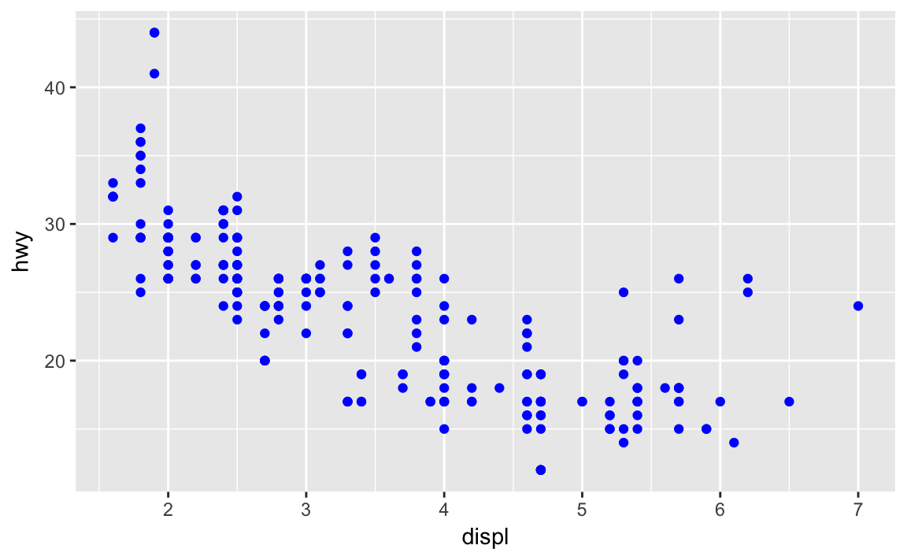
13.3 Complex Plots
Building on these basics, ggplot2 can be used to build almost any kind of plot you may want. These plots are declared using functions that follow from the Grammar of Graphics.
13.3.1 Specifying Geometry
The most obvious distinction between plots is what geometric objects (geoms) they include. ggplot2 supports a number of different types of geoms, including:
geom_pointfor drawing individual points (e.g., a scatter plot)geom_linefor drawing lines (e.g., for a line charts)geom_smoothfor drawing smoothed lines (e.g., for simple trends or approximations)geom_barfor drawing bars (e.g., for bar charts)geom_polygonfor drawing arbitrary shapes (e.g., for drawing an area in a coordinate plane)geom_mapfor drawing polygons in the shape of a map! (You can access the data to use for these maps by using themap_data()function).
Each of these geometries will need to include a set of aesthetic mappings (using the aes() function and assigned to the mapping argument), though the specific visual properties that the data will map to will vary. For example, you can map data to the shape of a geom_point (e.g., if they should be circles or squares), or you can map data to the linetype of a geom_line (e.g., if it is solid or dotted), but not vice versa.
- Almost all
geomsrequire anxandymapping at the bare minimum.
# line chart of mileage by engine power
ggplot(data = mpg) +
geom_line(mapping = aes(x = displ, y = hwy))
# bar chart of car type
ggplot(data = mpg) +
geom_bar(mapping = aes(x = class)) # no y mapping needed!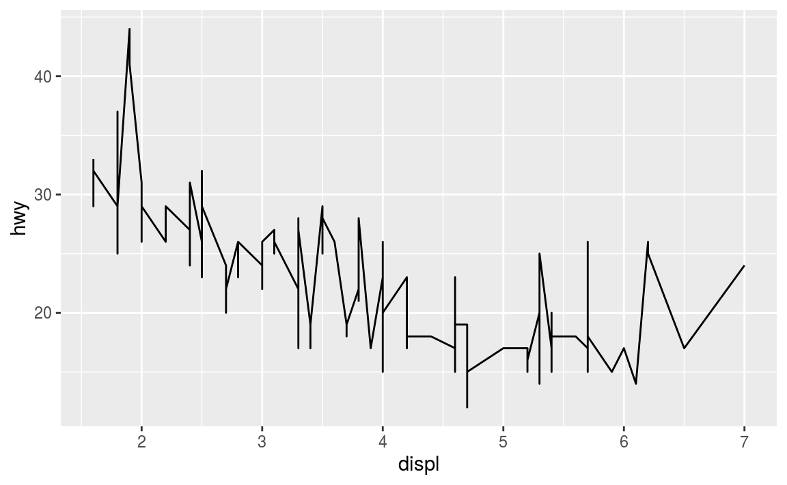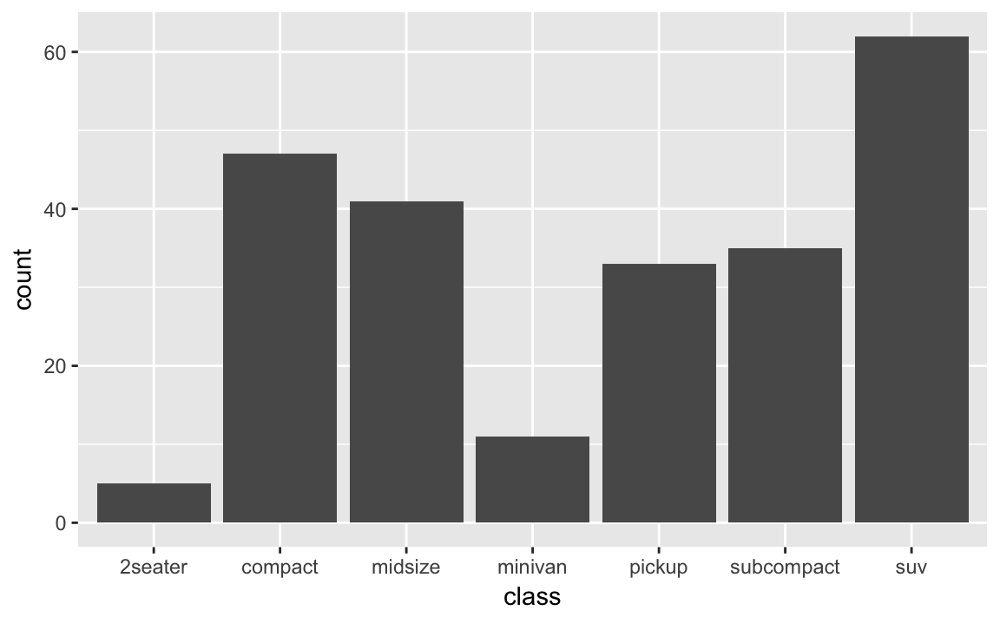
What makes this really powerful is that you can add multiple geometries to a plot, thus allowing you to create complex graphics showing multiple aspects of your data
# plot with both points and smoothed line
ggplot(data = mpg) +
geom_point(mapping = aes(x = displ, y = hwy)) +
geom_smooth(mapping = aes(x = displ, y = hwy))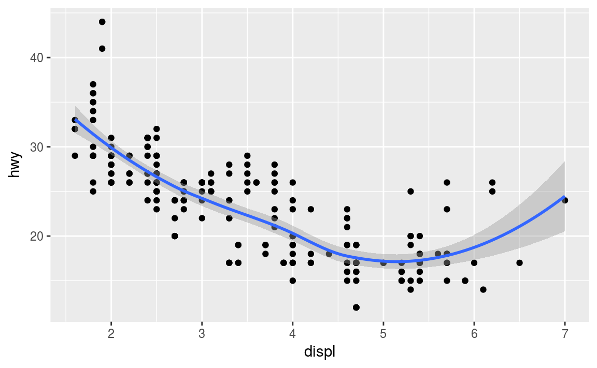
Of course the aesthetics for each geom can be different, so you could show multiple lines on the same plot (or with different colors, styles, etc). It’s also possible to give each geom a different data argument, so that you can show multiple data sets in the same plot.
- If you want multiple
geomsto utilize the same data or aesthetics, you can pass those values as arguments to theggplot()function itself; anygeomsadded to that plot will use the values declared for the whole plot unless overridden by individual specifications.
13.3.1.1 Statistical Transformations
If you look at the above bar chart, you’ll notice that the the y axis was defined for you as the count of elements that have the particular type. This count isn’t part of the data set (it’s not a column in mpg), but is instead a statistical transformation that the geom_bar automatically applies to the data. In particular, it applies the stat_count transformation, simply summing the number of rows each class appeared in the dataset.
ggplot2 supports many different statistical transformations. For example, the “identity” transformation will leave the data “as is”. You can specify which statistical transformation a geom uses by passing it as the stat argument:
# bar chart of make and model vs. mileage
# quickly (lazily) filter the dataset to a sample of the cars: one of each make/model
new.cars <- mpg %>%
mutate(car = paste(manufacturer, model)) %>% # combine make + model
distinct(car, .keep_all=TRUE) %>% # select one of each cars -- lazy filtering!
slice(1:20) # only keep 20 cars
# create the plot (you need the `y` mapping since it is not implied by the stat transform of geom_bar)
ggplot(new.cars) +
geom_bar(mapping=aes(x=car, y=hwy), stat="identity") + coord_flip() # horizontal bar chart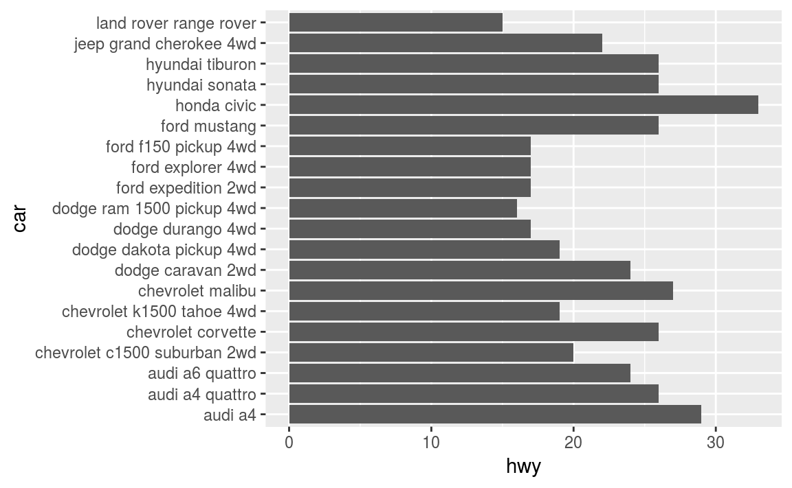
Additionally, ggplot2 contains stat_ functions (e.g., stat_identity for the “identity” transformation) that can be used to specify a layer in the same way a geom does:
# generate a "binned" (grouped) display of highway mileage
ggplot(data = mpg) +
stat_bin(aes(x=hwy, color=hwy), binwidth=4) # binned into groups of 4 units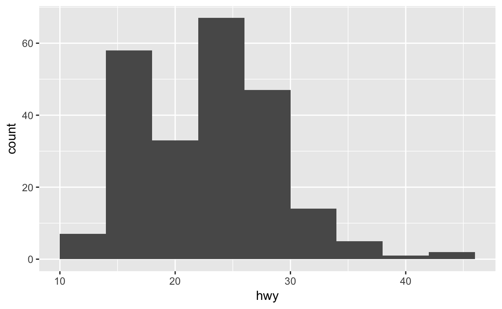
Notice the above chart is actually a histogram! Indeed, almost every stat transformation corresponds to a particular geom (and vice versa) by default. Thus they can often be used interchangeably, depending on how you want to emphasize your layer creation when writing the code.
# these two charts are identical
ggplot(data = mpg) +
geom_bar(mapping = aes(x = class))
ggplot(data = mpg) +
stat_count(mapping = aes(x = class))13.3.1.2 Position Adjustments
In addition to a default statistical transformation, each geom also has a default position adjustment which specifies a set of “rules” as to how different components should be positioned relative to each other. This position is noticeable in a geom_bar if you map a different variable to the color visual channel:
# bar chart of mileage, colored by engine type
ggplot(data = mpg) +
geom_bar(mapping = aes(x = hwy, fill = class)) # fill color, not outline color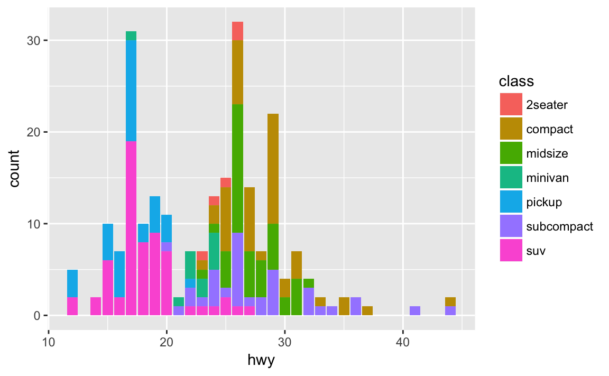
The geom_bar by default uses a position adjustment of "stack", which makes each “bar” a height appropriate to its value and stacks them on top of each other. You can use the position argument to specify what position adjustment rules to follow:
# a filled bar chart (fill the vertical height)
ggplot(data = mpg) +
geom_bar(mapping = aes(x = hwy, fill = drv), position = "fill")
# a dodged (group) bar chart -- values next to each other
# (not great dodging demos in this data set)
ggplot(data = mpg) +
geom_bar(mapping = aes(x = hwy, fill = drv), position = "dodge")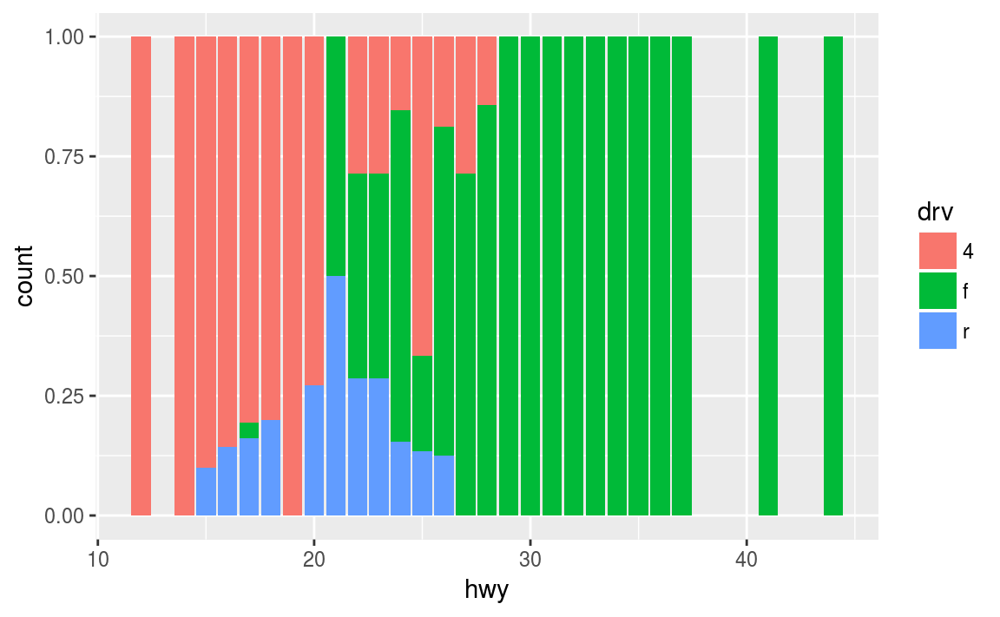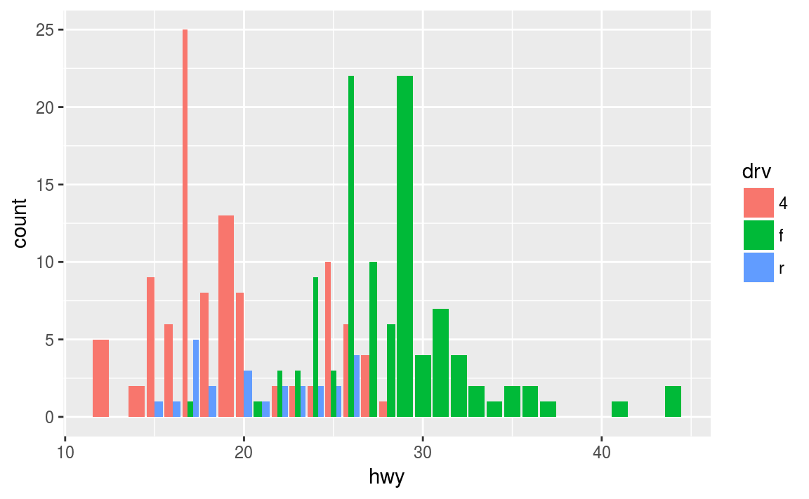
Check the documentation for each particular geom to learn more about its possible position adjustments.
13.3.2 Styling with Scales
Whenever you specify an aesthetic mapping, ggplot uses a particular scale to determine the range of values that the data should map to. Thus, when you specify
# color the data by engine type
ggplot(data = mpg) +
geom_point(mapping = aes(x = displ, y = hwy, color = class))ggplot automatically adds a scale for each mapping to the plot:
# same as above, with explicit scales
ggplot(data = mpg) +
geom_point(mapping = aes(x = displ, y = hwy, color = class)) +
scale_x_continuous() +
scale_y_continuous() +
scale_colour_discrete()Each scale can be represented by a function with the following name: scale_, followed by the name of the aesthetic property, followed by an _ and the name of the scale. A continuous scale will handle things like numeric data (where there is a continuous set of numbers), whereas a discrete scale will handle things like colors (since there is a small list of distinct colors).
While the default scales will work fine, it is possible to explicitly add different scales to replace the defaults. For example, you can use a scale to change the direction of an axis:
# mileage relationship, ordered in reverse
ggplot(data = mpg) +
geom_point(mapping = aes(x = cty, y = hwy)) +
scale_x_reverse()Similarly, you can use scale_x_log10() to plot on a logarithmic scale.
You can also use scales to specify the range of values on a axis by passing in a limits argument. This is useful for making sure that multiple graphs share scales or formats.
# subset data by class
suv = mpg %>% filter(class == "suv") # suvs
compact = mpg %>% filter(class == "compact") # compact cars
# scales
x_scale <- scale_x_continuous(limits = range(mpg$displ))
y_scale <- scale_y_continuous(limits = range(mpg$hwy))
col_scale <- scale_colour_discrete(limits = unique(mpg$drv))
ggplot(data = suv) +
geom_point(mapping = aes(x = displ, y = hwy, color = drv)) +
x_scale + y_scale + col_scale
ggplot(data = compact) +
geom_point(mapping = aes(x = displ, y = hwy, color = drv)) +
x_scale + y_scale + col_scale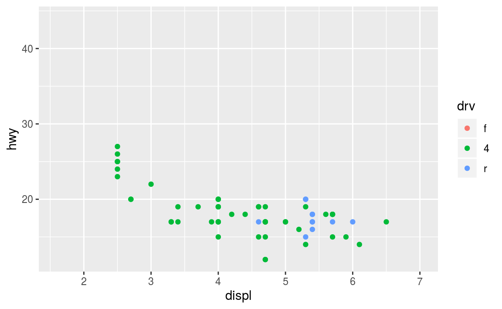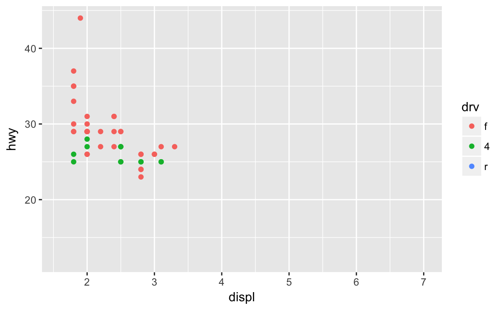
Notice how it is easy to compare the two data sets to each other because the axes and colors match!
These scales can also be used to specify the “tick” marks and labels; see the resources at the end of the chapter for details. And for further ways specifying where the data appears on the graph, see the Coordinate Systems section below.
13.3.2.1 Color Scales
A more common scale to change is which set of colors to use in a plot. While you can use scale functions to specify a list of colors to use, a more common option is to use a pre-defined palette from colorbrewer.org. These color sets have been carefully designed to look good and to be viewable to people with certain forms of color blindness. This color scale is specified with the scale_color_brewer() function, passing the palette as an argument.
ggplot(data = mpg) +
geom_point(mapping = aes(x = displ, y = hwy, color = class), size=4) +
scale_color_brewer(palette = "Set3")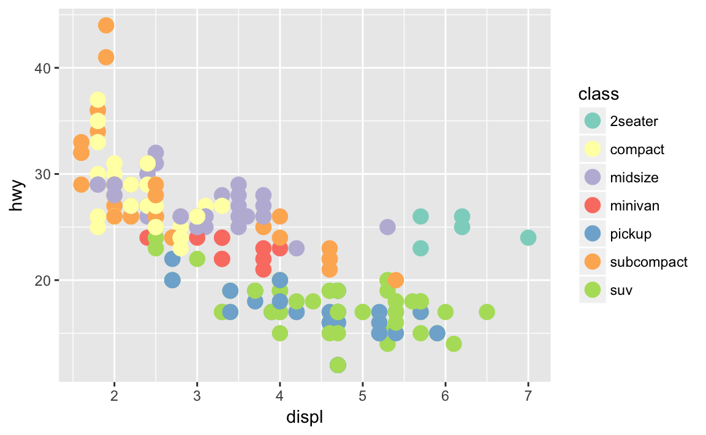
You can get the palette name from the colorbrewer website by looking at the scheme query parameter in the URL. Or see the diagram here and hover the mouse over each palette for its name.
You can also specify continuous color values by using a gradient scale, or manually specify the colors you want to use as a named vector.
13.3.3 Coordinate Systems
The next term from the Grammar of Graphics that can be specified is the coordinate system. As with scales, coordinate systems are specified with functions (that all start with coord_) and are added to a ggplot. There are a number of different possible coordinate systems to use, including:
coord_cartesianthe default cartesian coordinate system, where you specifyxandyvalues.coord_flipa cartesian system with thexandyflippedcoord_fixeda cartesian system with a “fixed” aspect ratio (e.g., 1.78 for a “widescreen” plot)coord_polara plot using polar coordinatescoord_quickmapa coordinate system that approximates a good aspect ratio for maps. See the documentation for more details.
Most of these system support the xlim and ylim arguments, which specify the limits for the coordinate system.
13.3.4 Facets
Facets are ways of grouping a data plot into multiple different pieces (subplots). This allows you to view a separate plot for each value in a categorical variable. Conceptually, breaking a plot up into facets is similar to using the group_by() verb in dplyr, with each facet acting like a level in an R factor.
You can construct a plot with multiple facets by using the facet_wrap() function. This will produce a “row” of subplots, one for each categorical variable (the number of rows can be specified with an additional argument):
# a plot with facets based on vehicle type.
# similar to what we did with `suv` and `compact`!
ggplot(data = mpg) +
geom_point(mapping = aes(x = displ, y = hwy)) +
facet_wrap(~class)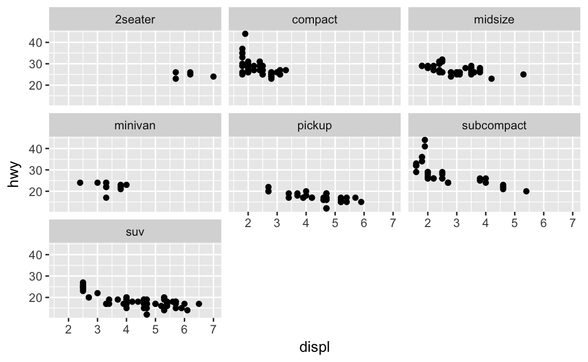
Note that the argument to facet_wrap() function is written with a tilde (~) in front of it. This specifies that the column name should be treated as a formula. A formula is a bit like an “equation” in mathematics; it’s like a string representing what set of operations you want to perform (putting the column name in a string also works in this simple case). Formulas are in fact the same structure used with standard evaluation in dplyr; putting a ~ in front of an expression (such as ~ desc(colname)) allows SE to work.
- In short: put a
~in front of the column name you want to “group” by.
13.3.5 Labels & Annotations
Textual labels and annotations (on the plot, axes, geometry, and legend) are an important part of making a plot understandable and communicating information. Although not an explicit part of the Grammar of Graphics (they would be considered a form of geometry), ggplot makes it easy to add such annotations.
You can add titles and axis labels to a chart using the labs() function (not labels, which is a different R function!):
ggplot(data = mpg) +
geom_point(mapping = aes(x = displ, y = hwy, color = class)) +
labs(title = "Fuel Efficiency by Engine Power, 1999-2008", # plot title
x = "Engine power (litres displacement)", # x-axis label (with units!)
y = "Fuel Efficiency (miles per gallon)", # y-axis label (with units!)
color = "Car Type") # legend label for the "color" property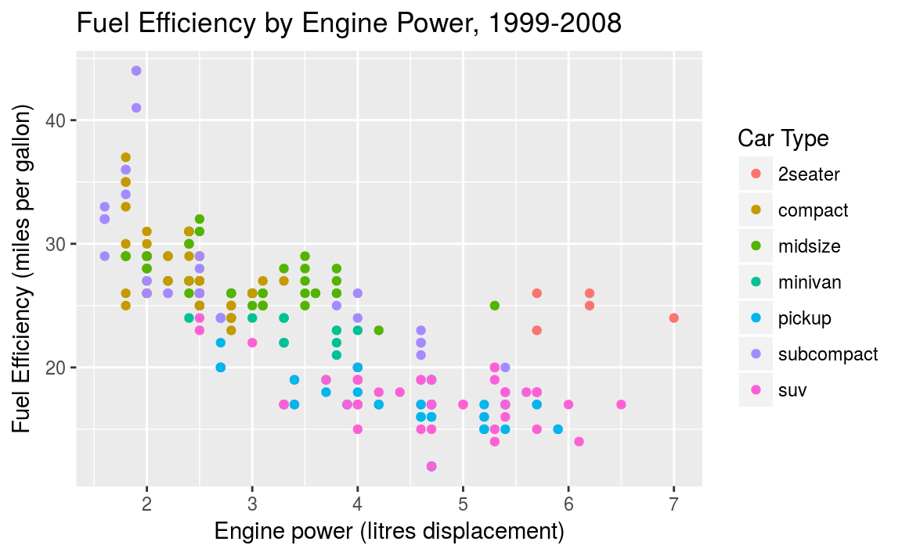
It is possible to add labels into the plot itself (e.g., to label each point or line) by adding a new geom_text or geom_label to the plot; effectively, you’re plotting an extra set of data which happen to be the variable names:
# a data table of each car that has best efficiency of its type
best_in_class <- mpg %>%
group_by(class) %>%
filter(row_number(desc(hwy)) == 1)
ggplot(data = mpg, mapping = aes(x = displ, y = hwy)) + # same mapping for all geoms
geom_point(mapping = aes(color = class)) +
geom_label(data = best_in_class, mapping = aes(label = model), alpha = 0.5)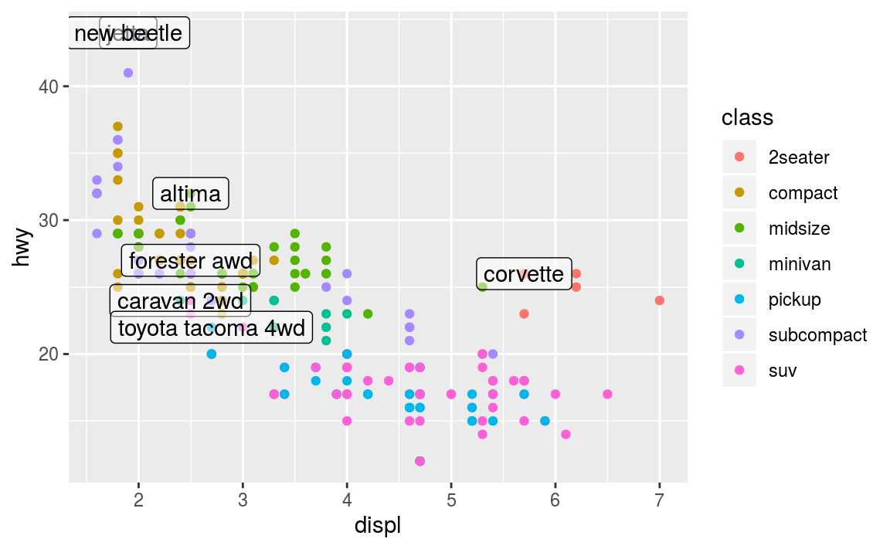
R for Data Science (linked in the resources below) recommends using the ggrepel package to help position labels.
13.4 Other Visualization Libraries
ggplot2 is easily the most popular library for producing data visualizations in R. That said, ggplot2 is used to produce static visualizations: unchanging “pictures” of plots. Static plots are great for for explanatory visualizations: visualizations that are used to communicate some information—or more commonly, an argument about that information. All of the above visualizations have been ways to explain and demonstrate an argument about the data (e.g., the relationship between car engines and fuel efficiency).
Data visualizations can also be highly effective for exploratory analysis, in which the visualization is used as a way to ask and answer questions about the data (rather than to convey an answer or argument). While it is perfectly feasible to do such exploration on a static visualization, many explorations can be better served with interactive visualizations in which the user can select and change the view and presentation of that data in order to understand it.
While ggplot2 does not directly support interactive visualizations, there are a number of additional R libraries that provide this functionality, including:
ggvisis a library that uses the Grammar of Graphics (similar toggplot), but for interactive visualizations. The interactivity is provided through theshinylibrary, which is introduced in a later chapter.Bokeh is an open-source library for developing interactive visualizations. It automatically provides a number of “standard” interactions (pop-up labels, drag to pan, select to zoom, etc) automatically. It is similar to
ggplot2, in that you create a figure and then and then add layers representing different geometries (points, lines etc). It has detailed and readable documentation, and is also available to other programming languages (such as Python).Plotly is another libary similar to Bokeh, in that it automatically provided standard interactions. It is also possible to take a
ggplot2plot and wrap it in Plotly in order to make it interactive. Plotly has many examples to learn from, though a less effective set of documentation than other libraries.rChartsprovides a way to utilize a number of JavaScript interactive visualization libraries. JavaScript is the programming language used to create interactive websites (HTML files), and so is highly specialized for creating interactive experiences.
There are many other libraries as well; searching around for a specific feature you need may lead you to a useful tool!
Resources
- gglot2 Documentation (particularly the function reference)
- ggplot2 Cheat Sheet (see also here)
- Data Visualization (R4DS) - tutorial using
ggplot2 - Graphics for Communication (R4DS) - “part 2” of tutorial using
ggplot - Graphics with ggplot2 - explanation of
qplot() - Telling stories with the grammar of graphics
- A Layered Grammar of Graphics (Wickham)